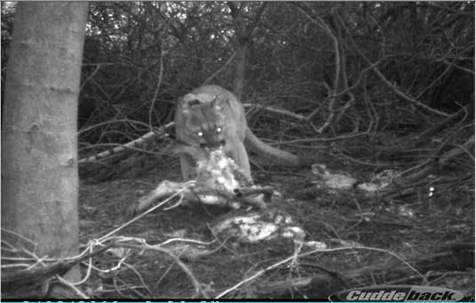

UCSC Wildlife Tracker (2011)
@ UCSC with the Environmental Studies Department and the Digital Arts + New Media Program
click to expand

Media


The Wildlife Tracker is a Facebook game being developed in conjunction with the Environmental Studies department and the Digital Arts + New Media Program at UCSC.
The game challenges players to correctly identify field photographs of wildlife in the surrounding areas in order to achieve high scores and career unlocks. The data generated from the game is then used to automatically tag and identify thousands of field photos, providing each with a specific confidence level.
I worked on the first version/prototype of the game as a Graduate Student Researcher at UCSC which was intended to be pilot tested with primary school students in the Santa Cruz area.UCSC Facebook Game.